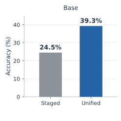
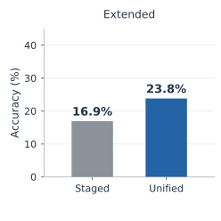
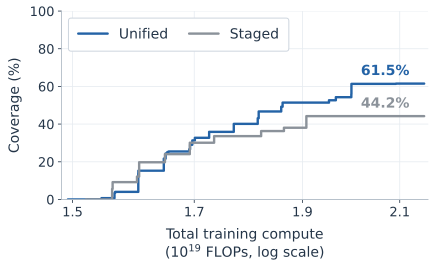
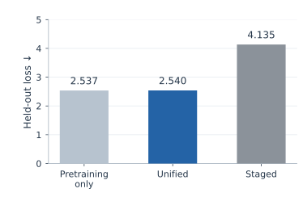
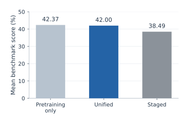
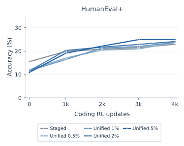
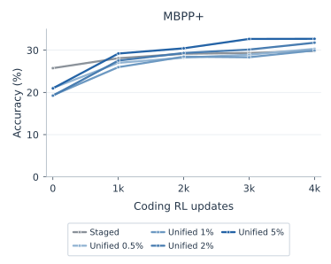

Foundation models usually learn from general text, curated data, and rewards in separate stages. Unified training brings these sources under a common likelihood-based learning rule, allowing their proportions to change throughout training. Our experiments show how this flexibility can improve reasoning and generalization within a fixed compute budget, reduce forgetting, and provide a better starting point for learning a new task.
1. Unified training
Pretraining, midtraining, and supervised fine-tuning (SFT) all train a model to assign higher probability to examples from a dataset. For suitable reinforcement-learning (RL) objectives, the update admits the same interpretation: the examples are generated by a model and selected or weighted using their rewards.
Our starting point is Maximum Likelihood Reinforcement Learning (MaxRL). With correct/incorrect rewards, its population update fits the distribution of correct responses to each prompt. We extend this likelihood construction to responses from a generator that can differ from the model being trained, and combine the resulting targets with static data in one objective. This gives the sources a shared data format, weighted token loss, and trainer, while generation and optimization can run independently.
Conventional staged training is a special case: it supplies the sources in succession. Unified training also allows them to overlap. The choice of data, its proportions, and its timing can therefore be studied within a common training framework.
Scope of the formulation
For binary rewards, the population MaxRL update fits the current model’s distribution of correct responses for each prompt. Using a different generator instead fits that generator’s successful-response distribution; it generally does not recover the current model’s on-policy MaxRL gradient.
The framework also accommodates REINFORCE and suitable continuous-reward objectives through different targets or weights. It does not cover every RL objective. Sections 3–4 and Appendix F of the paper give the formulation and implementation.
2. Reasoning and generalization
We first study the full training pipeline using a 124M-parameter model trained from scratch on general text and a fixed corpus of worked reasoning puzzles. RL introduces new combinations of the demonstrated reasoning operations. We evaluate both the RL tasks and larger puzzles absent from both midtraining and RL.
Staged training uses the corpora sequentially before RL. Unified training mixes midtraining data into the final part of pretraining and continues to use it during RL. The best unified configurations achieve higher final accuracy in both reasoning settings and generalize better to unseen larger puzzles.


These improvements also reflect better use of a fixed corpus. The strongest unified configurations train on the midtraining corpus for roughly two or four epochs during pretraining, whereas extending staged midtraining beyond its best budget reduces final RL accuracy. Additional midtraining data during RL can help as well, although the preferred proportion depends on the task. Reusing the same examples can therefore remain useful when their contribution is distributed across training.
3. Performance within a compute budget
Different data mixtures require different amounts of training compute. We therefore compare the best performance attained within each total budget, including pretraining, midtraining, RL generation, and RL updates. Both methods can select among their tested configurations and stop at an earlier checkpoint.
Here, accuracy measures success with one sampled answer, and coverage measures the probability of finding a correct answer within 16 attempts.
Reasoning task · Extended
Generalization · Unseen larger puzzles

Staged training remains competitive over part of the compute range. At larger budgets, unified training achieves higher accuracy and coverage. The advantage is particularly clear on unseen larger puzzles: within the largest staged budget, unified coverage reaches 61.5%, compared with 44.2% for staged training. The gains therefore persist when all training compute is counted, although the preferred allocation depends on the available budget.
4. Retaining pretrained capabilities
We next examine whether learning reasoning skills preserves the capabilities acquired during pretraining. Before RL, unified models remain close to the pretraining-only model on held-out text loss and average general-benchmark performance. All staged midtraining configurations we tested perform worse on these measures, including the variant selected specifically for retention.


We also study a 0.76B-parameter model with a heterogeneous midtraining corpus containing web text, mathematics, code, and reasoning traces. During mathematical RL, small midtraining mixtures improve held-out corpus loss and accuracy on knowledge benchmarks MMLU and SciQ, while maintaining similar mathematical accuracy. There is a tradeoff: coding accuracy decreases, even though coding coverage over 32 attempts remains higher than with staged training.
Changing the schedule shifts this balance. Ending the mixture halfway through RL improves final coding and science-question accuracy relative to constant mixing, but preserves less of the reduction in corpus loss. Data composition and timing affect different capabilities differently; no single tested schedule is best on every measure.
5. Subsequent learning
Lower performance immediately after training need not imply a worse starting point for the next task. To test this, we continue the mathematical models with the same coding RL procedure, without midtraining data.
All four unified models begin with lower coding accuracy but finish with higher accuracy than the staged model on both HumanEval+ and MBPP+. The model trained with 5% midtraining data during mathematical RL achieves the best final accuracy and coverage on both benchmarks.


The reasoning study shows a similar pattern: the staged model has higher Base accuracy before RL, yet the best unified models outperform it after RL. These results suggest that training choices should be evaluated by their effect on subsequent learning as well as immediate performance.
6. Discussion
These experiments use relatively small models and mostly one RL task at a time. They do not establish a universally best mixture or a scaling law. Some staged and unified comparisons also differ in how generation and training are coordinated; controls using the same trainer help assess the contribution of mixing without isolating every implementation choice.
Unified training provides a common formulation and implementation for studying the training process as a whole. The results motivate further work on how to allocate static and generated data over a model’s lifetime, balancing current performance, retention, and the capacity to learn new tasks.